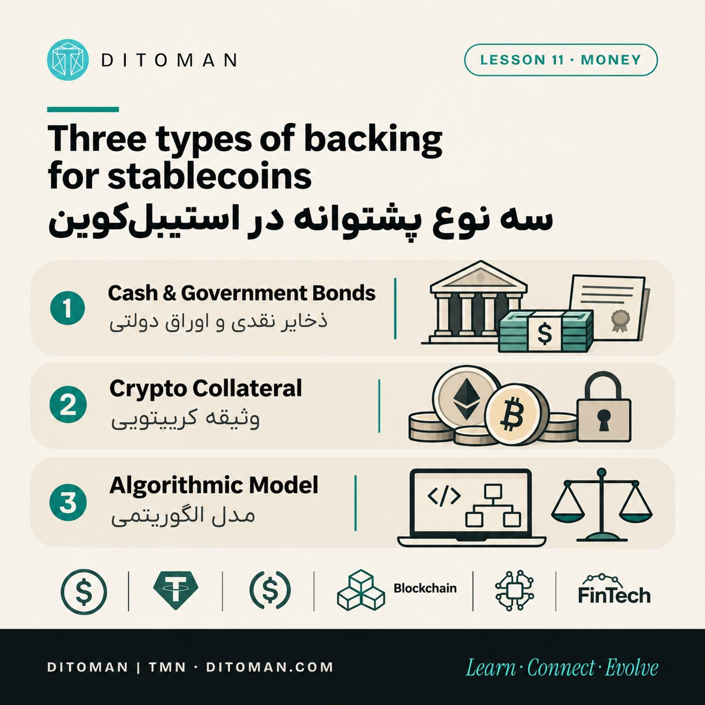

Dijital Dolarlar: Arkalarında Ne Var?
دلار دیجیتال، پشتوانهاش کجاست؟
Stablecoin'ler basit görünür: bir token, bir dolar. Ama bu bağ bir sözdür ve bir söz ancak arkasındaki şey kadar güçlüdür. Bu derste stablecoin'lerin arkasında ne olduğunu, ünlü bir stablecoin'in Mayıs 2022'de nasıl çöktüğünü ve herhangi bir tokene güvenmeden önce en önemli olan tek testi göreceksiniz.
استیبلکوینها ساده به نظر میرسند: یک توکن، یک دلار. ولی این ارتباط یک قول است و قول فقط به اندازهی چیزی که پشتش است محکم است. در این درس میبینید پشت استیبلکوینها چه چیزی هست، چطور یکی از مشهورترین استیبلکوینها در مه ۲۰۲۲ فروپاشید، و کدام آزمون پیش از اعتماد به هر توکن از همه مهمتر است.
Ders İçeriği
محتوای درس
Dersi İngilizce veya Farsça okuyabilirsiniz.
درس را به فارسی یا انگلیسی بخوانید.
Muhtemelen USDT, USDC ve diğer tokenların gün be gün neredeyse tam bir dolar olarak fiyatlandığını, bitcoin'in ise binlerce dolar sıçradığını görmüşsünüzdür. Bu neden olur? Çünkü biri tokeni orada tutacağına söz vermiştir. Bu söze inanıp inanmamanız üç şeye bağlıdır: kim veriyor, arkasında ne var ve tokeni yeniden dolara çevirebilir misiniz.
Bu dersi kısa bir dedektif hikâyesi gibi düşünün. Her stablecoin'in bir şüphelisi (ihraççı), bir zulası (karşılık) ve bir çıkış yolu (itfa) vardır. Göreviniz üçünü de kontrol etmek.
01. Stablecoin Nedir
Stablecoin, değerini bir ABD dolarına yakın tutmak üzere tasarlanmış dijital bir tokendir. Dolara bu bağlanmaya bağlama (peg) denir. Her zaman bir dolar değerinde olması amaçlanan bir hediye kartı düşünün: kartın kendisi yalnızca bir plastik parçasıdır ve değeri tamamen arkasındaki sözden gelir.
Bu, banka hesabınızdaki paradan farklıdır. Banka mevduatı bir bankaya karşı bir alacaktır. Stablecoin ise ihraç edene karşı bir alacaktır ve bu alacağın koşulları bir banka şubesinde değil, ihraççının belgelerinde yazılıdır. Güvenmeden önce bu koşulları okuyun.
02. Bir Tokeni Desteklemenin Üç Yolu
Çoğu stablecoin üç tür karşılıktan birine dayanır. Aşağıdaki resim bunları yan yana gösterir.
Nakit ve devlet tahvilleri: ihraççı, ihraç ettiği tokenlar için nakit veya kısa vadeli devlet tahvili tutar. Büyük stablecoin'ler arasında en yaygın model budur. Soru her zaman bu rezervlerin gerçekte ne kadar güvenli olduğu ve ne kadar kolay satılabildiğidir.
Kripto teminatı: token, teminat olarak kilitlenmiş diğer kripto varlıklarla desteklenir; genellikle ihraç edilen tokenlardan daha değerlidir. Bu varlıklar sert düşerse sistem stres testine girer ve ayakta kalmak için güvenlik payına ihtiyaç duyar.
Algoritmik model: gerçek bir rezerv yoktur. Sistem fiyatı arz kuralları ve ikinci bir tokenle tutmaya çalışır. Mayıs 2022'de başarısız olan model budur ve aşağıdaki vaka çalışmasının konusudur.

03. Rezerv Raporu Denetim Değildir
Bir ihraççı tokenin tamamen karşılıklı olduğunu söylediğinde, bu iddia attestation adı verilen bir rapordan gelebilir. Attestation genellikle belirli bir tarih için hazırlanmış tek bir anın anlık görüntüsüdür. Tam bir denetim daha derine iner ve daha uzun bir dönemi kapsar. Bunlar farklı araçlardır ve bir manşet hangisini okuduğunuzu nadiren söyler.
ABD yasası artık daha sağlam kurallar koyuyor. GENIUS Yasası uyarınca stablecoin'ler ABD doları ve kısa vadeli hazine bonoları gibi likit varlıklarla desteklenmeli ve ihraççılar rezerv bileşimini her ay kamuya açıklamalıdır. 50 milyar doların üzerindeki ihraççılar ayrıca yıllık denetimden de geçmelidir. Bunlar dünyanın herhangi bir yerinde herhangi bir ihraççıya sorulması gereken iyi sorulardır.
Herhangi bir rezerv raporu hakkında dört soru sorun: ne tutuluyor? Bunun ne kadarı nakit? Kim denetliyor? Ne sıklıkla yayımlanıyor?
04. İtfa: En Önemli Test
Bir stablecoin, ancak pratikte onu dolara çevirebiliyorsanız bir dolar değerindedir. Genellikle ihraççı tokenları yalnızca onaylı müşteriler için, belirlenen koşullar ve asgari tutarlarla itfa eder. Çoğu insan yalnızca piyasada, başka bir alıcıya, piyasanın sunduğu fiyattan satabilir.
Sahipler karşılıktan şüphe ederse ya da piyasa ince ise fiyat bir doların altına düşebilir. Önce nakde ihtiyaç duyanlar genellikle en kötü anlaşmayı yapar, çünkü paniğe satarlar. Dolayısıyla asıl soru yalnızca tokenin ne değerde olduğunu iddia ettiği değil, kimin onu bozdurabildiği ve hangi fiyattan olduğudur.
05. Vaka Çalışması: UST Bağını Nasıl Kaybetti
2022'de TerraUSD (UST) en bilinen stablecoin'lerden biriydi. Algoritmik bir tokendi: dolar ya da başka bir varlıkla desteklenmiyordu. Bunun yerine bağını bir token çiftiyle koruyordu. Bir UST her zaman bir dolar değerindeki LUNA yakılarak basılabilir ve bir UST bir dolar değerinde LUNA karşılığında itfa edilebilirdi. Mekanizmanın tamamı buydu.
Talebi, UST mevduatlarına yıllık yaklaşık %18 ila %20 ödeyen bir borç verme platformu olan Anchor artırdı. Bu getiri normalin çok üzerindeydi ve sıradan borç vermeyle üretilmiyordu. Mayıs 2022'nin başında UST yaklaşık 98 sente düşmüştü ve bazı büyük sahipler çekilmeye başladı.
Sonra döngü tersine döndü. UST bir doların altında satıldıkça, arbitraj tasarımın varsaydığı gibi işlemedi. Luna Foundation Guard rezervlerini harcayarak bağı savunmaya çalıştı. 16 Mayıs 2022'ye kadar 100 milyon doların altında değiştirilebilir varlık kaldığını söyledi. LUNA'nın değeri sıfıra doğru çöktü, UST birkaç sente düştü ve zarar tek bir tokenin çok ötesine yayıldı.
Ders, algoritmaların kötü olduğu değildir. Yalnızca güven ve ikinci bir tokenle ayakta tutulan bir sözün günler içinde yok olabileceğidir. Bugün sorulacak soru basit: yarın güven kırılsa, sahiplere ödeme yapmak için gerçekte ne kalıyor?
06. Bırakılması Gereken Üç Mit
Mit 1: Bir stablecoin her zaman güvenlidir, bankadaki nakit gibi. Bir stablecoin ihraççısına karşı bir alacaktır, hükümet güvencesi değildir. Güvenliği karşılığa, itfa kurallarına ve ihraççının davranışına bağlıdır.
Mit 2: 'Tamamen karşılıklı' bozulamaz demektir. Bir rezerv gerçek olup yine de likit olmayabilir ya da hızlıca satılamayan bir biçimde tutuluyor olabilir. İyi karşılıklı bir token bile korku nakitten daha hızlı yayıldığında sallanabilir.
Mit 3: Tüm stablecoin'ler aynı şekilde çalışır. Çalışmazlar. Karşılıkları, ihraççıları ve itfaları farklıdır ve her birini ayrı ayrı kontrol etmelisiniz.
07. Bu Sıradan İnsanlar İçin Neden Önemli
Stablecoin'ler parayı birçok geleneksel kanaldan daha hızlı ve ucuz taşıyabilir ve günün her saati çalışır. İnsanların daha istikrarlı bir değer saklama aracı aradığı yerlerde dolar bazlı paraya erişim sunarlar; bu, bu kadar hızlı büyümelerinin bir nedenidir.
Ama kolaylık risk taşır. Karşılık ne kadar zayıfsa, güven kırıldığında zarar o kadar büyük olur. Hız her iki yönde de çalışır: içeri hızlıca girmenize yardım eder, herkesin hızlıca çıkmasına da.
08. Kurallar Yazılıyor
ABD'de GENIUS Yasası 18 Temmuz 2025'te yasalaştı. Stablecoin'ler için ilk federal düzenleyici çerçeveyi oluşturdu. Yasa, iki tarihten erken olanında yürürlüğe girer: yürürlük sonrası 18 ay veya ana düzenleyicilerin nihai kurallarını yayımlamasından 120 gün sonra.
Yani ayrıntılı kurallar hâlâ yazılıyor ve her yerde aynı değil. Avrupa Birliği, Hong Kong ve diğerlerinin kendi çerçeveleri var. Her yeni kuralı üç soruyu aklınızda tutarak okuyun: kim ihraç ediyor, neyle destekleniyor ve itfa gerçek mi.
09. Kendiniz Deneyin: Bir Rezerv Raporu Okuyun
Bildiğiniz herhangi bir stablecoin'i seçin ve şu altı adımı izleyin. Yaklaşık on dakika sürer.
1. Resmî sayfayı bulun. Özet siteyi değil, ihraççının kendi şeffaflık veya rezerv sayfasını kullanın.
2. Tarihi kontrol edin. Eski bir rapor yalnızca geçmişi anlatır.
3. Rezervleri listeleyin. Nakit, kısa vadeli devlet tahvilleri, diğer varlıklar. Ne kadarı nakit benzeri?
4. Rapor türünü belirleyin. Attestation mı, denetim mi? Kim yazmış?
5. İtfa koşullarını bulun. Kim itfa edebilir, asgari tutar nedir, hangi ücretler uygulanır ve ne kadar sürer?
6. Tek bir cümle yazın. 'Bu tokene güvenirdim çünkü…' ya da 'Güvenmezdim çünkü…'. Gerekçeniz asıl derstir.
10. TMN Nerede Duruyor
TMN bir stablecoin değildir. Dolar bağı yoktur ve onu itfa etmeyi vaat eden bir ihraççı yoktur; bu yüzden fiyatı piyasa tarafından belirlenir. Bu nedenle Ders 05'teki kontroller ve Ders 09'daki likidite fikirleri TMN için doğru araçlardır, itfa testi ise ona uygulanmaz.
Bu ders hiçbir projeyi yargılamaz. Yalnızca bir token kategorisini açıklar; böylece onunla karşılaştığınızda kategoriyi tanıyabilirsiniz.
Bundan Ne Çıkarmalı
Stablecoin bir sözdür. Değeri, arkasında neyin olduğuna ve gerçekten itfa edip edemeyeceğinize bağlıdır.
Birine güvenmeden önce üç şey sorun: kim ihraç ediyor? Neyle destekleniyor ve bu yayımlanıyor mu? Dolara itfa edebilir misiniz?
Bir rezerv raporu ile tam denetim farklı araçlardır. Manşeti okumadan önce farkı okuyun.
Tarih önemlidir: yalnızca güvenle ayakta tutulan bir söz, 2022'de UST'nin gösterdiği gibi günler içinde yok olabilir.
Stablecoin olsun ya da olmasın her tokene Ders 05 kontrol listesini uygulayın.
شاید توکنهایی مثل USDT و USDC را دیده باشید که روز به روز تقریباً دقیقاً روی یک دلار ثبت میشوند، در حالی که بیتکوین هزاران دلار بالا و پایین میرود. چرا؟ چون کسی قول داده توکن را همانجا نگه دارد. باور کردن این قول به سه چیز بستگی دارد: چه کسی آن را میدهد، پشتش چیست، و آیا میشود توکن را دوباره به دلار تبدیل کرد؟
این درس را مثل یک پروندهی کوچک ببینید. هر استیبلکوین سه بخش دارد: یک ناشر (کسی که قول میدهد)، یک پشتوانه (چیزی که پشت قول است)، و یک راه خروج (بازخرید). کار شما بررسی هر سه است.
۰۱. استیبلکوین چیست
استیبلکوین توکنی دیجیتال است که هدفش نگه داشتن ارزش آن نزدیک به یک دلار آمریکاست. این چسبیدن به دلار را «پگ» (peg) مینامند. مثل کارت هدیهای که قرار است همیشه یک دلار ارزش داشته باشد: خود کارت فقط یک تکه پلاستیک است و ارزشش کاملاً از قولی میآید که پشتش است.
این با پول حساب بانکی فرق دارد. سپردهی بانکی طلب شما از یک بانک است. استیبلکوین طلب شما از ناشر آن است، و شرایط این طلب در اسناد ناشر نوشته شده، نه در شعبهی یک بانک. پیش از اتکا به آن، همین شرایط را بخوانید.
۰۲. سه راه پشتیبانی یک توکن
بیشتر استیبلکوینها به یکی از سه نوع پشتوانه تکیه میکنند. تصویر زیر هر سه را کنار هم نشان میدهد.
پول نقد و اوراق دولتی: ناشر برای هر توکنی که منتشر میکند، پول نقد یا اوراق کوتاهمدت دولتی نگه میدارد. این رایجترین مدل در استیبلکوینهای بزرگ است. پرسش همیشگی این است که این ذخایر واقعاً چقدر امناند و چقدر سریع میشود آنها را فروخت.
وثیقهی کریپتویی: توکن با داراییهای دیجیتال دیگری پشتیبانی میشود که بهعنوان وثیقه قفل شدهاند، معمولاً با ارزشی بیشتر از توکنهای منتشرشده. اگر آن داراییها شدید سقوط کنند، سیستم تحت آزمون قرار میگیرد و برای سالم ماندن به حاشیهی اطمینان نیاز دارد.
مدل الگوریتمی: پشتوانهی واقعی وجود ندارد. سیستم سعی میکند قیمت را با قواعد عرضه و یک توکن دوم نگه دارد. همین مدل است که در مه ۲۰۲۲ شکست خورد، و مطالعهی موردی زیر دربارهی آن است.

۰۳. گزارش پشتوانه، حسابرسی نیست
وقتی ناشری میگوید توکنی کاملاً پشتوانه دارد، ادعا ممکن است در گزارشی به نام «تأیید پشتوانه» (attestation) آمده باشد. این گزارش معمولاً تصویری از یک لحظهی مشخص است. حسابرسی کامل عمیقتر است و دورهی طولانیتری را پوشش میدهد. این دو ابزار متفاوتاند و تیتر خبر معمولاً نمیگوید کدام را میخوانید.
قانون آمریکا حالا قواعد سختتری دارد. طبق قانون GENIUS، استیبلکوینها باید با داراییهای نقد مانند دلار و اوراق خزانهداری کوتاهمدت پشتیبانی شوند، و ناشرها باید ترکیب ذخایرشان را هر ماه بهطور عمومی منتشر کنند. ناشرهایی که اندازهشان از ۵۰ میلیارد دلار بیشتر است، باید حسابرسی سالانه هم داشته باشند. اینها پرسشهای خوبی برای هر ناشری در هر کجای دنیا هستند.
دربارهی هر گزارش پشتوانه چهار پرسش بپرسید: چه چیزی نگه داشته شده؟ چقدرش نقد است؟ چه کسی بررسی میکند؟ هر چند وقت منتشر میشود؟
۰۴. بازخرید: مهمترین آزمون
استیبلکوین فقط وقتی واقعاً یک دلار میارزد که در عمل بتوان آن را به دلار تبدیل کرد. معمولاً ناشر فقط برای مشتریان تأییدشده، با شرایط و حداقل مبلغ مشخص، توکن را به دلار برمیگرداند. بیشتر مردم فقط میتوانند در بازار و به خریدار دیگری بفروشند، با هر قیمتی که بازار بدهد.
اگر دارندگان به پشتوانه شک کنند یا بازار کمعمق باشد، قیمت میتواند زیر یک دلار برود. کسانی که زودتر به نقد نیاز دارند، اغلب بدترین معامله را میکنند، چون در وحشت میفروشند. پس پرسش واقعی فقط این نیست که توکن خودش را چقدر میداند، بلکه این است که چه کسی واقعاً میتواند آن را نقد کند و با چه قیمتی.
۰۵. مطالعهی موردی: چطور UST چسبیدن به دلار را از دست داد
در سال ۲۰۲۲، TerraUSD (UST) یکی از مشهورترین استیبلکوینها بود. این توکن الگوریتمی بود: با دلار یا هیچ دارایی دیگری پشتیبانی نمیشد. بهجای آن، با کمک یک توکن دوم، یعنی LUNA، روی یک دلار نگه داشته میشد. با سوزاندن LUNA به ارزش یک دلار میشد یک UST ساخت، و با هر UST میشد LUNA به ارزش یک دلار گرفت. کل مکانیزم همین بود.
تقاضا با Anchor، یک پلتفرم وامدهی، تقویت شد؛ این پلتفرم سالانه حدود ۱۸ تا ۲۰ درصد روی سپردههای UST پرداخت میکرد. این بازده بسیار بالاتر از حد معمول بود و از وامدهی عادی تولید نمیشد. در اوایل مه ۲۰۲۲ قیمت UST تا حدود ۹۸ سنت افت کرد و برخی دارندگان بزرگ شروع به خروج کردند.
بعد حلقه برعکس چرخید. وقتی UST زیر یک دلار فروخته شد، مکانیزم آربیتراژ دیگر آنطور که طراحی شده بود کار نمیکرد. بنیاد Luna Foundation Guard با خرج کردن ذخایرش تلاش کرد چسبیدن به دلار را حفظ کند. تا ۱۶ مه ۲۰۲۲ اعلام کرد کمتر از ۱۰۰ میلیون دلار دارایی قابلاستفاده باقی مانده است. ارزش LUNA به صفر نزدیک شد، UST تا چند سنت افت کرد و آسیب فراتر از یک توکن پخش شد.
درس این نیست که الگوریتم بد است. درس این است که قولی که فقط با اعتماد و یک توکن دوم نگه داشته شده، میتواند در چند روز ناپدید شود. پرسش سادهای که باید بپرسید این است: اگر فردا اعتماد بشکند، واقعاً چه چیزی برای پرداخت به دارندگان باقی میماند؟
۰۶. سه باور غلط را کنار بگذاریم
باور غلط ۱: استیبلکوین مثل پول نقد در بانک، همیشه امن است. استیبلکوین طلب از ناشرش است، نه تضمین یک دولت. امنیتش به پشتوانه، قواعد بازخرید و رفتار ناشر بستگی دارد.
باور غلط ۲: «کاملاً پشتوانهدار» یعنی هرگز نمیشکند. ذخیره میتواند واقعی باشد و در عین حال نقدشونده نباشد، یا به شکلی نگه داشته شود که نتوان سریع فروختش. حتی توکن خوب پشتوانهدار هم وقتی ترس سریعتر از نقد پخش شود، میلرزد.
باور غلط ۳: همهی استیبلکوینها یکجور کار میکنند. نمیکنند. پشتوانه، ناشر و بازخرید هرکدام فرق دارد، و باید هرکدام را جداگانه بررسی کرد.
۰۷. چرا این برای مردم عادی مهم است
استیبلکوینها میتوانند پول را سریعتر و ارزانتر از بسیاری از مسیرهای سنتی جابهجا کنند، و شبانهروزی کار میکنند. در جاهایی که مردم دنبال نگهداری ارزش پایدارتر هستند، دسترسی به پولی با پایهی دلار هم جذاب است؛ به همین دلیل رشد این بازار سریع بوده است.
اما راحتی هزینهای دارد. هرچه پشتوانه ضعیفتر باشد، وقتی اعتماد بشکند آسیب بزرگتر است. سرعت در هر دو جهت کار میکند: هم به شما کمک میکند سریع وارد شوید، هم به همه کمک میکند سریع خارج شوند.
۰۸. قواعد در حال نوشته شدن است
در آمریکا قانون GENIUS در ۱۸ ژوئیهی ۲۰۲۵ امضا شد و نخستین چارچوب قانونی فدرال برای استیبلکوینها را ساخت. این قانون زودتر از دو تاریخ اجرایی میشود: ۱۸ ماه پس از تصویب، یا ۱۲۰ روز پس از آنکه نهادهای اصلی ناظر قواعد نهایی را منتشر کنند.
پس قواعد جزئی هنوز در حال نوشته شدن است و در همهی کشورها یکسان نیست. اتحادیهی اروپا، هنگکنگ و دیگران چارچوبهای خودشان را دارند. هر قاعدهی تازه را با همان سه پرسش بخوانید: ناشرش کیست، پشتوانهاش چیست و بازخرید واقعی است یا نه.
۰۹. خودتان امتحان کنید: یک گزارش پشتوانه را بخوانید
یک استیبلکوینی که میشناسید انتخاب کنید و این شش گام را دنبال کنید. حدود ده دقیقه طول میکشد.
۱. صفحهی رسمی را پیدا کنید. از صفحهی شفافیت یا پشتوانهی خود ناشر استفاده کنید، نه خلاصهی یک سایت دیگر.
۲. تاریخ را بررسی کنید. گزارش قدیمی فقط دربارهی گذشته به شما میگوید.
۳. ذخایر را فهرست کنید. نقد، اوراق کوتاهمدت دولتی، داراییهای دیگر. چه سهمی شبیه پول نقد است؟
۴. نوع گزارش را تشخیص دهید. تأیید پشتوانه است یا حسابرسی؟ چه کسی آن را نوشته؟
۵. شرایط بازخرید را پیدا کنید. چه کسی میتواند بازخرید کند، حداقل مبلغ چقدر است، کارمزد چیست و چقدر زمان میبرد؟
۶. یک جمله بنویسید. «به این توکن اعتماد میکنم چون…» یا «اعتماد نمیکنم چون…». دلیل شما همان درس واقعی است.
۱۰. TMN کجای این بحث است
TMN استیبلکوین نیست. نه به دلار چسبیده و نه ناشری دارد که قول بازخرید بدهد، پس قیمتش در بازار تعیین میشود. به همین دلیل برای TMN بررسیهای درس ۰۵ و مفاهیم نقدشوندگی درس ۰۹ ابزار درستاند، و آزمون بازخرید به آن ربطی ندارد.
این درس دربارهی هیچ پروژهای قضاوت نمیکند. فقط یک دسته از توکنها را توضیح میدهد تا وقتی با آن روبهرو شدید، دستهاش را بشناسید.
چه برداشتی کنیم
استیبلکوین یک قول است. ارزشش به پشتوانهاش و به این بستگی دارد که واقعاً بشود آن را به دلار تبدیل کرد.
پیش از اعتماد به هر استیبلکوین سه چیز بپرسید: ناشرش کیست؟ پشتوانهاش چیست و آیا منتشر میشود؟ آیا میشود آن را به دلار تبدیل کرد؟
گزارش پشتوانه و حسابرسی کامل دو ابزار متفاوتاند. پیش از تیتر خبر، تفاوتشان را بخوانید.
تاریخ مهم است: قولی که فقط با اعتماد نگه داشته شده، میتواند در چند روز ناپدید شود، همانطور که UST در ۲۰۲۲ نشان داد.
چکلیست درس ۰۵ را روی هر توکنی به کار ببرید، استیبلکوین باشد یا نه.
Stablecoin'ler ve TMN Aynı Şey Değil
استیبلکوین و TMN یک چیز نیستند
TMN bir stablecoin değildir ve dolar bağı yoktur. Fiyatı piyasa tarafından belirlenir; bu yüzden onu okumak için doğru araçlar Ders 05'teki kontroller ve Ders 09'daki likidite fikirleridir. Bu ders bir projeyi değil, kategoriyi açıklar.
TMN استیبلکوین نیست و به دلار چسبیده نیست. قیمتش در بازار تعیین میشود، پس بررسیهای درس ۰۵ و مفاهیم نقدشوندگی درس ۰۹ ابزارهای درستی برای خواندنش هستند. این درس دستهی دارایی را توضیح میدهد، نه پروژهای را.
Temel Kavramlar
مفاهیم کلیدی
- Stablecoin
- Bağlama (peg)
- Rezerv karşılığı
- Attestation ve denetim
- İtfa
- Teminat
- Algoritmik model
- Bağın kopması (depeg)
- GENIUS Yasası
- استیبلکوین
- پگ (چسبیدن به دلار)
- پشتوانهی ذخیره
- تأیید پشتوانه در برابر حسابرسی
- بازخرید
- وثیقه
- مدل الگوریتمی
- دپگ (خروج از پگ)
- قانون GENIUS
Öğrenme Hedefleri
اهداف یادگیری
- Stablecoin'in ne olduğunu ve bağın ne anlama geldiğini açıklayın.
- Üç ana karşılık türünü ve her birinin ana riskini sayın.
- Attestation raporunu tam denetimden ayırın ve GENIUS Yasası'nın neyi şart koştuğunu söyleyin.
- UST vakasını kullanarak itfanın bağın tutup tutmayacağını neden belirlediğini açıklayın.
- Bir rezerv raporunu adım adım okuyun ve gerekçeli bir hüküm yazın.
- Herhangi bir stablecoin'e güvenmeden önce üç soruyu uygulayın.
- توضیح دهید استیبلکوین چیست و پگ یعنی چه.
- سه نوع اصلی پشتوانه و ریسک اصلی هر کدام را نام ببرید.
- گزارش تأیید پشتوانه را از حسابرسی کامل تشخیص دهید و بگویید قانون GENIUS چه چیزی لازم میداند.
- با کمک مطالعهی UST توضیح دهید چرا بازخرید تعیین میکند پگ حفظ میشود یا نه.
- یک گزارش پشتوانه را گامبهگام بخوانید و یک قضاوت مستدل بنویسید.
- پیش از اعتماد به هر استیبلکوین سه پرسش را به کار ببرید.
Gelecek Sınavı Soru Bankası
بانک پرسشهای آزمونک آینده
Bu sorular, gelecekteki Ditoman sınav ve katılım sistemi için hazırlanmıştır.
این پرسشها برای سامانهی آزمونک و مشارکت آیندهی دیتومان آماده شدهاند.
Soru 1
پرسش ۱
Bir stablecoin'in ana amacı nedir?
هدف اصلی استیبلکوین چیست؟
A. Hızlı fiyat artışı
الف. رشد سریع قیمت
B. Değerini bir dolara yakın tutmak
ب. ثابت نگه داشتن ارزش نزدیک به یک دلار
C. Merkez bankasının yerini tamamen almak
ج. جایگزینی کامل بانک مرکزی
Doğru cevap: B
پاسخ درست: ب
Soru 2
پرسش ۲
UST hangi karşılık türüne dayanıyordu ve Mayıs 2022'de başarısız oldu?
UST به کدام نوع پشتوانه تکیه داشت که در مه ۲۰۲۲ شکست خورد؟
A. Nakit rezervler
الف. ذخایر نقدی
B. Kripto teminatı
ب. وثیقهی کریپتویی
C. İkinci bir tokenli algoritmik model
ج. مدل الگوریتمی با یک توکن دوم
Doğru cevap: C. UST'nin dolar rezervi yoktu; LUNA'ya ve basım ile yakıma dayanıyordu.
پاسخ درست: ج. UST ذخیرهی دلاری نداشت و به LUNA و سازوکار ساخت و سوزاندن تکیه داشت.
Soru 3
پرسش ۳
Tam bir denetimle karşılaştırıldığında, attestation raporu neyi gösterir?
در مقایسه با حسابرسی کامل، گزارش تأیید پشتوانه (attestation) چه چیزی را نشان میدهد؟
A. Tam denetimle aynı şeyi
الف. همان حسابرسی کامل
B. Tek bir anın görüntüsünü
ب. تصویری از یک لحظه
C. Hükümet güvencesini
ج. ضمانت دولتی
Doğru cevap: B
پاسخ درست: ب
Soru 4
پرسش ۴
İhraççı yalnızca onaylı müşteriler için itfa ediyorsa, sıradan bir sahip genellikle ne yapabilir?
اگر ناشر فقط برای مشتریان تأییدشده بازخرید کند، دارندهی عادی معمولاً چه کار میتواند بکند؟
A. Piyasada satabilir; fiyatın bir doların altına düşme riskiyle
الف. در بازار بفروشد، با این ریسک که قیمت زیر یک دلار برود
B. Merkez bankasından geri ödeme talep edebilir
ب. از بانک مرکزی بازپرداخت بخواهد
C. Hiçbir şey; token zaten bir dolar değerindedir
ج. هیچ کاری؛ توکن در هر حال یک دلار میارزد
Doğru cevap: A
پاسخ درست: الف
Soru 5
پرسش ۵
Bir stablecoin'e güvenmeden önce sorulacak doğru soru hangisidir?
کدام پرسش درست پیش از اعتماد به یک استیبلکوین است؟
A. Kim ihraç ediyor?
الف. ناشرش کیست؟
B. Fiyatı yükselecek mi?
ب. آیا قیمتش بالا میرود؟
C. Arkadaşlarım aldı mı?
ج. آیا دوستانم خریدهاند؟
Doğru cevap: A
پاسخ درست: الف
Kaynaklar
منابع
- Mayer Brown: GENIUS Yasası yasalaştı (18 Temmuz 2025) — İmza tarihi ve ödeme stablecoin'leri için ilk federal çerçeve
- Latham & Watkins: 2025 GENIUS Yasası — Yürürlük tarihi kuralı (nihai düzenlemelerden 18 ay veya 120 gün sonra)
- Bloomberg via BNN: Trump stablecoin yasasını imzaladı — Likit varlık karşılığı ve aylık rezerv bileşimi açıklaması
- The Block: Trump GENIUS Yasası'nı imzaladı — Tam dolar karşılığı ve 50 milyar doların üzerindeki ihraççılar için yıllık denetim
- The Block: Terra, Luna ve UST, buraya nasıl geldik (11 Mayıs 2022) — UST bağının nasıl çalıştığı ve çöküşün ilk günleri
- Corporate Finance Institute: Terra'ya ne oldu — Terra çöküşüne genel bakış ve piyasa kayıpları
- CoolWallet: Terra otopsisi — 16 Mayıs 2022'de Luna Foundation Guard'da kalan rezerv
- CVJ: TerraUSD (UST) genel bakış — Anchor'un %18 ila %20'lik getirisi ve 98 sente erken düşüş
UST vakasına ilişkin rakamlar yukarıdaki kaynaklardan gelir ve sonraki araştırmalarla revize edilebilir. Üç mit ve okuma alıştırması eğitim amaçlıdır, yatırım tavsiyesi değildir.
ارقام مطالعهی UST از منابع بالا آمده و ممکن است با پژوهشهای بعدی اصلاح شود. باورهای غلط و تمرین خواندن گزارش آموزشیاند و توصیهی سرمایهگذاری نیستند.
Instagram Özeti
خلاصه در اینستاگرام
Bu dersin kısa bir görsel sürümü Instagram'da. Bu sayfa tam öğrenme sürümüdür.
نسخهی تصویری کوتاه این درس در اینستاگرام منتشر شده است. این صفحه نسخهی کامل آموزشی آن است.